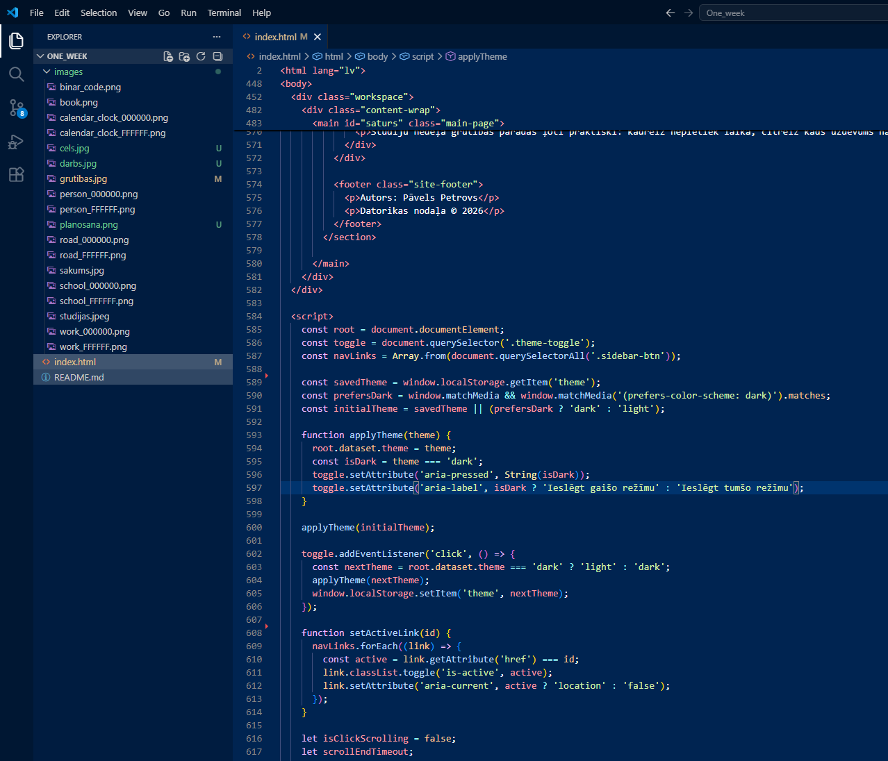
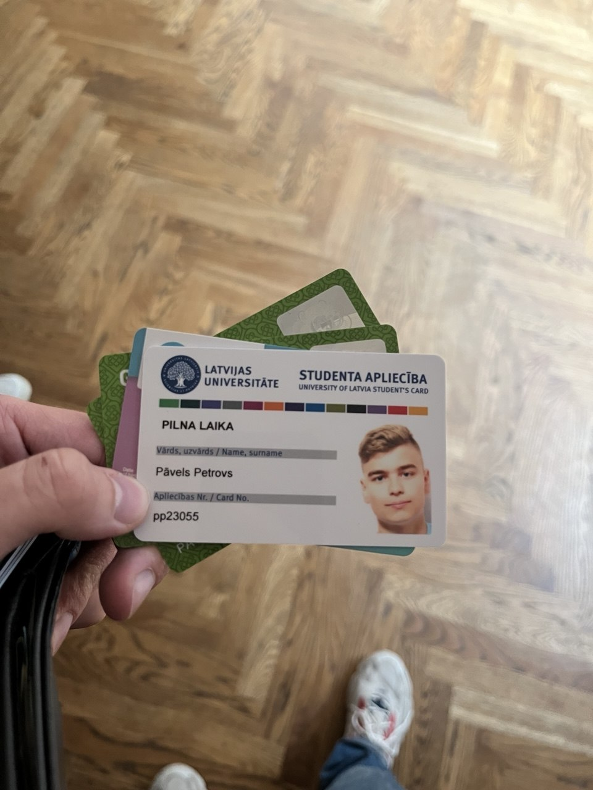
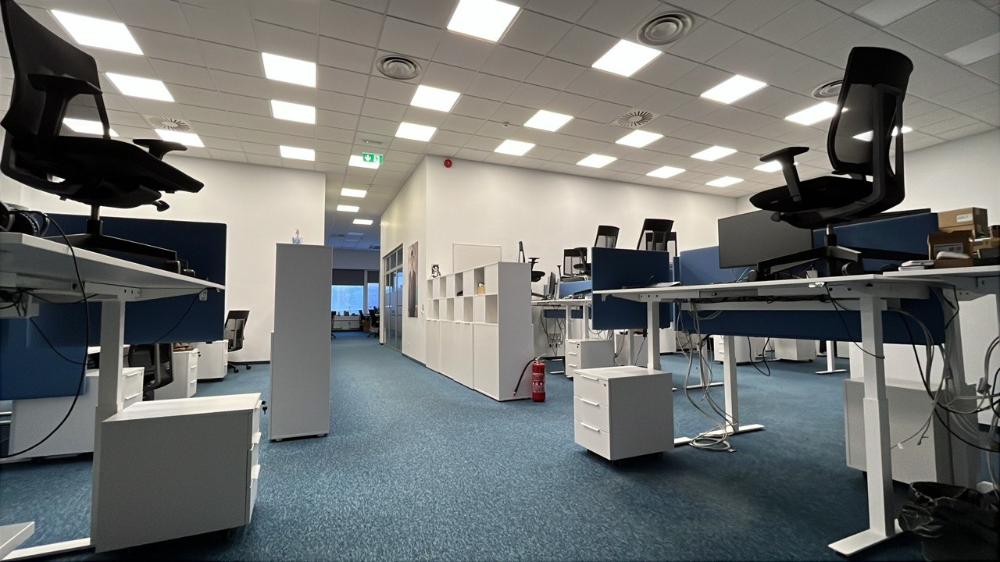
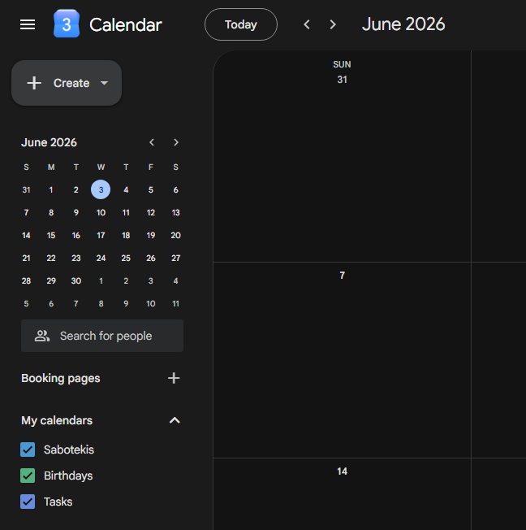
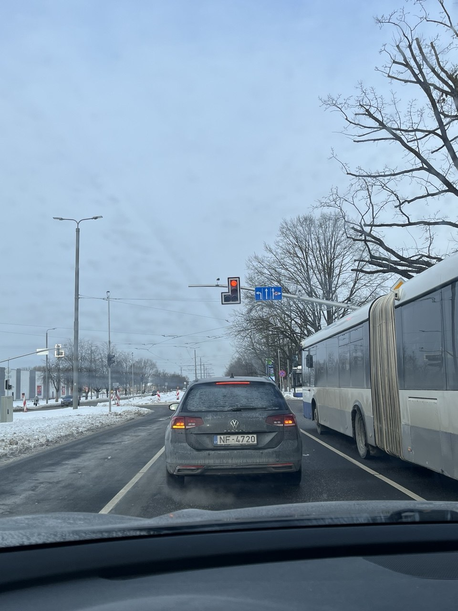
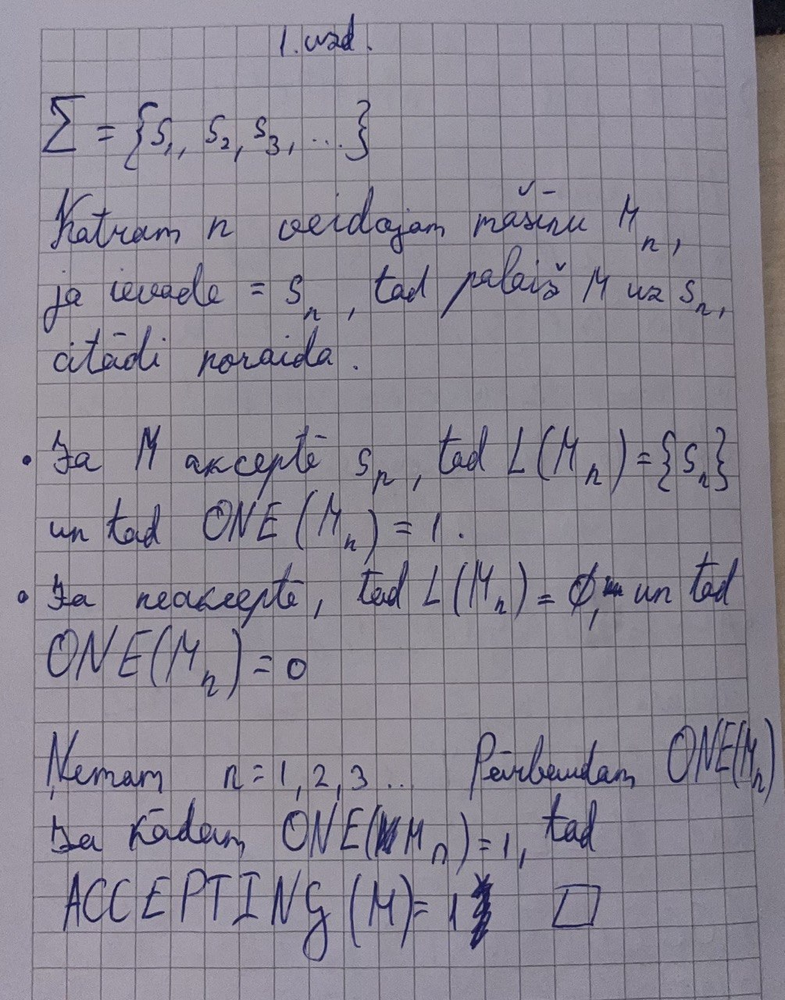

Studijas un darbs līdzsvarā


Studijas
Esmu 3. kursa students, un studijas aizņem lielu daļu manas ikdienas. Mācību process notiek gan klātienē, gan tiešsaistē, tāpēc man ir jāspēj pielāgoties dažādiem lekciju formātiem.
Tiešsaistes lekcijas ļauj mācīties no jebkuras vietas, kur ir pieejams internets, taču tās prasa lielu pašdisciplīnu un spēju koncentrēties. Savukārt klātienes nodarbības sniedz iespēju labāk komunicēt ar pasniedzējiem un kursabiedriem, kā arī aktīvāk iesaistīties studiju procesā.
Studiju laikā regulāri jāizpilda mājasdarbi, laboratorijas darbi un dažādi projekti. Katram kursam ir savi termiņi un prasības, tāpēc svarīgi sekot līdzi uzdevumiem e-studiju vidē.
Neskatoties uz izaicinājumiem, studijas man sniedz jaunas zināšanas un prasmes, kas būs noderīgas nākotnes karjerā.
Darbs
Papildus studijām es strādāju uzņēmumā Verifone kā praktikants. Šī ir lieliska iespēja iegūt reālu darba pieredzi un iepazīt profesionālu darba vidi vēl studiju laikā.
Man ir pusslodzes darbs, kas ļauj apvienot darba pienākumus ar universitātes prasībām, tomēr cenšos darbam veltīt pēc iespējas vairāk laika, lai ātrāk apgūtu jaunas zināšanas un prasmes.
Katra darba diena sniedz iespēju iemācīties kaut ko jaunu, sadarboties ar pieredzējušiem kolēģiem un attīstīt profesionālās iemaņas.
Tā kā esmu praktikants, viens no maniem galvenajiem mērķiem ir uzkrāt pēc iespējas vairāk praktiskās pieredzes un iegūt zināšanas, kuras vēlāk varēšu izmantot savā karjerā.
Es uzskatu, ka darbs studiju laikā ir vērtīgs ieguldījums manā profesionālajā attīstībā un nākotnē.


Plānošana
Lai veiksmīgi apvienotu studijas un darbu, man ir ļoti svarīga laika plānošana. Visus svarīgos datumus es pierakstu kalendārā, lai nepalaistu garām nevienu termiņu.
Tajā atzīmēju, kad jānodod mājasdarbi, laboratorijas darbi un praktiskie uzdevumi, kā arī kontroldarbu un eksāmenu datumus. Tas palīdz man pārskatāmi redzēt gaidāmos pienākumus un savlaicīgi sagatavoties.
Kalendārs ir viens no galvenajiem rīkiem, ko izmantoju ikdienā. Regulāri pārbaudu savu grafiku un cenšos ieplānot laiku gan studijām, gan darbam.
Ja redzu, ka tuvojas vairāki termiņi vienlaikus, cenšos uzdevumus sākt pildīt agrāk. Tas ir īpaši svarīgi semestra beigās, kad bieži vien sakrīt projektu nodošanas termiņi, kontroldarbi un gatavošanās eksāmeniem.
Ceļš
Ceļš uz darbu un universitāti ir svarīga manas ikdienas daļa. Es dzīvoju Dārziņos, tāpēc pārvietošanās ar sabiedrisko transportu vien ne vienmēr ir ērta un aizņem daudz laika.
Tieši tāpēc ikdienā izmantoju automašīnu, kas ļauj ātrāk un ērtāk nokļūt vajadzīgajā vietā.
Dodoties uz darbu, parasti braucu ar automašīnu, jo tas ir vispraktiskākais un ātrākais pārvietošanās veids. Savukārt, kad jādodas uz universitāti, es braucu ar mašīnu līdz Akropolei, kur to novietoju stāvvietā.
Pēc tam turpinu ceļu ar trolejbusu līdz universitātei.
Šāds maršruts palīdz izvairīties no satiksmes sastrēgumiem pilsētas centrā un atvieglo automašīnas novietošanu.
Lai gan ceļš dažkārt aizņem diezgan daudz laika, esmu atradis sev ērtāko pārvietošanās veidu. Dzīvojot tālāk no centra, ir svarīgi rūpīgi plānot izbraukšanas laiku, lai paspētu gan uz lekcijām, gan uz darbu.
Ceļā pavadītais laiks ir kļuvis par neatņemamu manas ikdienas sastāvdaļu, un tas iemāca būt disciplinētam un savlaicīgi organizēt savus dienas plānus.


Grūtības
Apvienojot studijas ar darbu, man ikdienā rodas vairākas grūtības.
Visbiežāk izaicinājums ir atrast pietiekami daudz laika mājasdarbu izpildei un gatavošanās kontroldarbiem un eksāmeniem, jo darba laikā ne vienmēr ir iespēja tam pievērsties.
Tas nozīmē, ka bieži vien studiju uzdevumi jāveic vakarā vai brīvdienās, kad jau ir nogurums.
Papildu grūtības rodas arī tad, kad sakrīt vairāki termiņi vienlaikus — piemēram, laboratorijas darbi, projekti un prezentācijas.
Šādās situācijās ir jāspēj ļoti labi plānot savu laiku, lai visu paspētu izdarīt kvalitatīvi un laikā.
Dažkārt ir arī kursi vai tēmas, kur sākumā ir grūti saprast kontekstu, un tad nepieciešams patstāvīgi meklēt papildu informāciju un iedziļināties materiālā.
Tas prasa vairāk laika un pacietības, īpaši tad, ja paralēli ir darba pienākumi.
Tomēr šīs grūtības palīdz attīstīt neatlaidību un spēju pašam atrisināt problēmas.